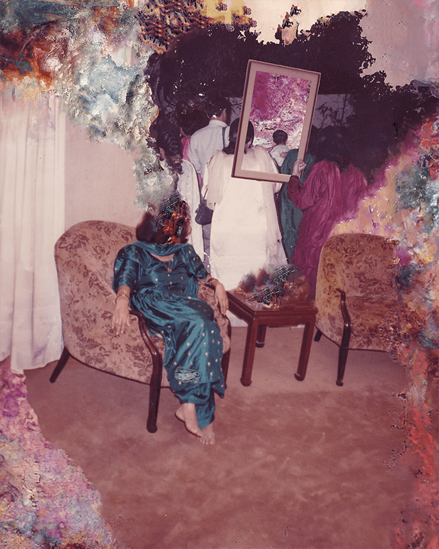

WE WERE HERE
Overview
APRIL 2023 - PRESENT
Adobe Photoshop, Adobe After Effects, TouchDesigner, GLSL
"We Were Here" is an ongoing project, dedicated to repurposing family photographs that were destroyed during
the 2020 floods in Karachi. This exploration reflects on the impermanence of memories and confronts the
impact of climate change-induced trauma.
This project is a personal journey. It is a means to confront and bid farewell to the sudden loss of those
memories, while exploring the question: Can the memories that existed in the photographs find a way to
survive through these altered forms?
Process
The project reimagines lost memories through a series of collages and animations.
The collages were created by piecing together what remained of the damaged photographs, while the animations
were made by stitching and scrolling through several photographs and processing them to look like flowing
water.
The viewer can interact with the animations through a responsive installation, located in the basement where
we stored our photographs when they were destroyed by the floods.



←
→